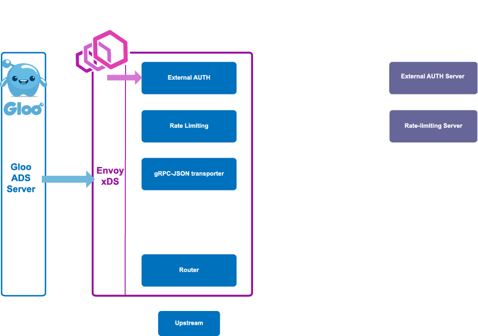
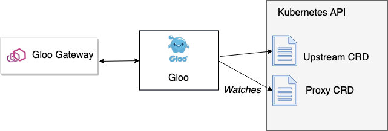
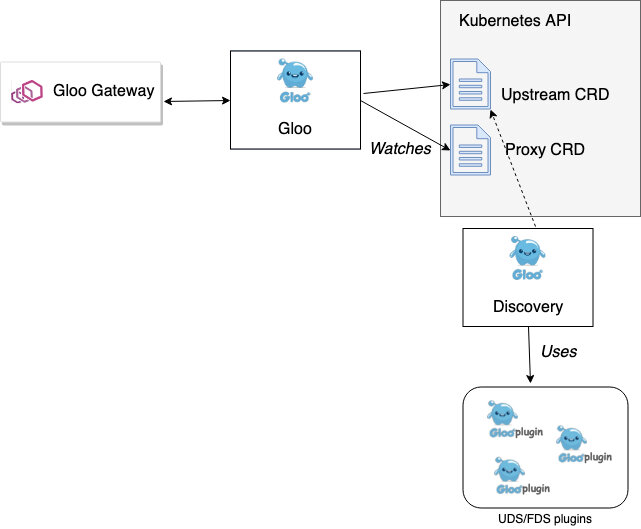
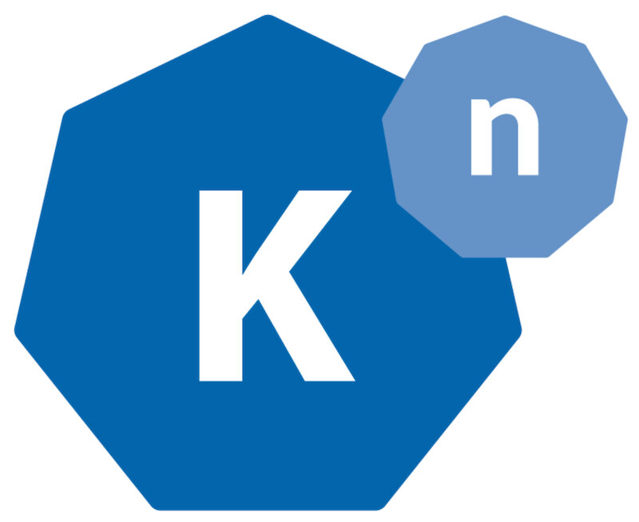

本文为翻译文章，点击查看原文。
编者按
本文介绍如何为 Envoy 构建控制面指南的第4部分：构建的可扩展性。Gloo团队建议将重点放在控制平面的简单核心上，然后通过插件和微服务控制器的可组合性扩展它。Gloo的体系结构是这样构建的，它使Gloo团队能够快速添加任何新特性，以支持任何平台、配置、过滤器，以及更多的新特性。这就是为什么，尽管Gloo是非常kubernets原生的，但它是为在任何云上的任何平台上运行而构建的。核心控制平面的设计允许这样做。
这是探究为 Envoy 代理构建控制平面系列文章的第4部分。请关注@christianposta和@soloio_inc将在一周内推出下一部分内容。
在本系列博客中，我们将关注以下领域:
- 采用一种机制来动态更新 Envoy 的路由、服务发现和其他配置
- 确定控制平面由哪些组件组成，包括支持存储、服务发现 API、安全组件等
- 建立最适合您的使用场景和组织架构的特定于域的配置对象和 API
- 考虑如何让控制平面支持可拔插(本博客)
- 部署各种控制平面组件的选项
- 为你的控制平面考虑测试套件
在上一篇文章中，我们探讨了为您的控制平面构建一个特定于领域的API，使得该API最适合您的组织和工作流并满足首选条件/约束。
构建可插拔的控制平面引擎
Envoy是一个非常强大的软件，每天都有新的用例和贡献被提交给社区。尽管Envoy的核心非常稳定，但它建立在可插拔的过滤器架构之上，因此人们可以为不同的L7协议编写新的编解码器或添加新的功能。目前，Envoy过滤器是用C++编写的，可以选择使用Lua扩展Envoy，但是也有一些讨论支持Web Assembly实现可扩展性。同样值得注意的是，Cilium社区的很多人正在围绕一个基于Go的Envoy可扩展机制开展工作。伴随着Envoy社区的快速发展和需要配置这些新功能，还需要新的特定于领域的对象模型来支持想利用Envoy新平台的需求。在本节中，我们将探索沿着这两个维度扩展Envoy控制平面。
通过编写C++过滤器，扩展Envoy非常简单。我们在Gloo项目上创建的Envoy过滤器包括：
- Squash调试器 (https://github.com/envoyproxy/envoy/tree/master/api/envoy/config/filter/http/squash)
- Caching(目前为封闭源码;应该在不久的将来开放源代码)
- Request/Response 传输 (https://github.com/solo-io/envoy-gloo/tree/master/source/extensions/filters/http/transformation)
- AWS lambda (https://github.com/solo-io/envoy-gloo/tree/master/source/extensions/filters/http/aws_lambda)
- NATS streaming (https://github.com/solo-io/envoy-nats-streaming, https://github.com/solo-io/envoy-gloo/tree/master/source/extensions/filters/http/nats/streaming)
- Google Cloud Functions (https://github.com/solo-io/envoy-google-function)
- Azure function (https://github.com/solo-io/envoy-azure-functions)

在上面的图示中，您可以看到请求是如果通过Envoy并经过一些过滤器的，这些过滤器具有应用于请求和响应的特定任务。你可以在Solo.io首席执行官/创始人Idit Levine和Solo.io首席架构师Yuval Kohavi写的一篇博客文章中读到更多关于Envoy的功能和构建Gloo的控制平面所做的权衡。
因为Envoy功能非常多，而且一直在添加新特性，所以值得花一些时间来考虑是否要将控制平面构建为可扩展的，以便能够使用这些新特性。在Gloo项目中，选择在以下几个层次上进行扩展：
- 在核心Gloo配置对象的基础上构建更容易进行自定义特定域的配置对象
- 控制平面插件化以增强控制平面的现有行为
- 创建工具来加速前面两点
让我们来看看每一个层次，以及它们是如何构建可扩展和灵活的控制平面的。
核心API对象，构建时要考虑灵活性
在上一节中，我们重点讨论了用于配置控制平面的特定于域的配置对象。在Gloo中，我们有最低级别的配置对象，称为Proxy和Upstream。Proxy定义了我们可以对底层代理(在本例中是Envoy)进行的最低级别配置。使用Proxy对象，我们定义请求如何路由到Upstream。
下面是Proxy对象的一个例子(在Kubernetes中是CRD)：
apiVersion: gloo.solo.io/v1
kind: Proxy
metadata:
clusterName: ""
creationTimestamp: "2019-02-15T13:27:39Z"
generation: 1
labels:
created_by: gateway
name: gateway-proxy
namespace: gloo-system
resourceVersion: "5209108"
selfLink: /apis/gloo.solo.io/v1/namespaces/gloo-system/proxies/gateway-proxy
uid: 771377f2-3125-11e9-8523-42010aa800e0
spec:
listeners:
- bindAddress: '::'
bindPort: 8080
httpListener:
virtualHosts:
- domains:
- '*'
name: gloo-system.default
routes:
- matcher:
exact: /petstore/findPet
routeAction:
single:
destinationSpec:
rest:
functionName: findPetById
parameters: {}
upstream:
name: default-petstore-8080
namespace: gloo-system
- matcher:
exact: /sample-route-1
routeAction:
single:
upstream:
name: default-petstore-8080
namespace: gloo-system
routePlugins:
prefixRewrite:
prefixRewrite: /api/pets
name: gateway
status:
reported_by: gloo
state: 1
您可以看到Proxy对象指定监听器、类型以及路由信息。如果您仔细观察，您会发现它在一定程度上遵循Envoy的配置，但在支持附加功能方面有所不同。在路由中，您可以看到请求被发送到“Upstream”。Gloo知道如何路由到Upstream，您可以在上面的Proxy对象中看到这些定义。Proxy对象是由Gloo的控制平面转换为Envoy xDS API的对象。您会看到如下的Gloo的组件：
NAME READY STATUS RESTARTS AGE
discovery-676bcc49f8-n55jt 1/1 Running 0 8m
gateway-d8598c78c-425hz 1/1 Running 0 8m
gateway-proxy-6b4b86b4fb-cm2cr 1/1 Running 0 8m
gloo-565659747c-x7lvf 1/1 Running 0 8m
gateway-proxy组件是Envoy代理。控制平面由以下组件组成：
gatewaydiscoverygloo
负责此Proxy->Envoy xDS转换的组件是gloo，它是一个事件驱动组件，通过将Proxy对象转换为Envoy的LDS/RDS/CDS/EDS API，负责核心xDS服务和自定义Envoy过滤器的配置。

Gloo知道如何路由到Upstream和它上面的函数。Upstream也是Gloo的核心配置对象。我们需要这个Upstream对象的原因是，它封装了上游集群功能的更多实现，而不是Envoy所知道的开箱即用的功能。Envoy知道“集群”，但是Gloo(位于Envoy之上)知道其上的函数。此功能支持功能级路由，功能级路由是用于组合新应用程序和API的更强大的路由结构。Envoy从“host:port”端点方面了解集群，但是使用Gloo，我们可以为这些集群附加额外的上下文，以便它们理解“函数”，这些函数可以是REST方法/路径、gRPC操作或Lambda之类的云函数。例如，这里有一个名为default-petstore-8080的Gloo上游：
---
discoveryMetadata: {}
metadata:
labels:
discovered_by: kubernetesplugin
service: petstore
sevice: petstore
name: default-petstore-8080
namespace: gloo-system
status:
reportedBy: gloo
state: Accepted
upstreamSpec:
kube:
selector:
app: petstore
serviceName: petstore
serviceNamespace: default
servicePort: 8080
serviceSpec:
rest:
swaggerInfo:
url: http://petstore.default.svc.cluster.local:8080/swagger.json
transformations:
addPet:
body:
text: '{"id": {{ default(id, "") }},"name": "{{ default(name, "")}}","tag":
"{{ default(tag, "")}}"}'
headers:
:method:
text: POST
:path:
text: /api/pets
content-type:
text: application/json
deletePet:
headers:
:method:
text: DELETE
:path:
text: /api/pets/{{ default(id, "") }}
content-type:
text: application/json
findPetById:
body: {}
headers:
:method:
text: GET
:path:
text: /api/pets/{{ default(id, "") }}
content-length:
text: "0"
content-type: {}
transfer-encoding: {}
findPets:
body: {}
headers:
:method:
text: GET
:path:
text: /api/pets?tags={{default(tags, "")}}&limit={{default(limit,
"")}}
content-length:
text: "0"
content-type: {}
transfer-encoding: {}
注意，我们有更多责任来确定upstream的函数要公开哪些部分。在这种情况下，上游恰好是一个REST服务，它公开了一个Open API Spec/Swagger文档。Gloo自动发现这些信息，并用这些信息丰富这个Upstream对象，然后可以在代理对象中使用这些信息。

回到Gloo控制平面的组件，您将看到一个discovery组件，它通过添加“Upstream Discovery Service”(UDS)和“Function Discovery Service”(FDS)来增强Envoy的服务发现API。UDS使用一组插件(参见下一节)自动地从各自的运行时目录中发现Upstream。最简单的例子是在Kubernetes中运行时，我们可以自动发现Kubernetes Services。Gloo还可以发现来自Consul、AWS和其他的Upstream。函数发现服务(FDS)评估已经发现的每个Upstream，并尝试发现它们的类型(REST、gRPC、GraphQL、AWS Lambda等)。如果FDS能够发现关于上游的这些附加属性，它就会用这些“函数”丰富upstream元数据。
Gloo控制平面中的discovery组件仅使用其UDS和FDS服务来发现Upstream对象并将其写入Kuberentes CRDs。从这里，用户可以创建从Envoy代理上的特定API路径到Upstream上的特定函数的路由规则。Envoy代理不直接与这个控制平面组件交互(请回忆一下，Envoy只使用gloo组件公开的xDS API)。相反，discovery组件促进了向Upstream的创建，然后可以由Proxy对象使用。这是一个使用支持微服务(本例中的discovery服务)来为控制平面的整体功能做出贡献的好例子。
Proxy和Upstream是上一节中提到的较底层特定于域的配置对象。更有趣的是，我们如何在此之上分层一组配置对象，以满足具有更自定义工作流的用户特定用例。
扩展特定于域的配置层
在Gloo的控制平面中，还有另一个组件称为gateway。该组件实现更高级别的特定于域的配置，用户最终将与之交互(直接通过YAML文件或通过glooctl CLI工具间接地交互)。gateway组件涉及两个特定于域的对象：
- Gateway — 指定特定监听器端口上可用的路由和API端点，以及每个API的安全性
- VirtualService — 将API路由分组到一组“虚拟API”中，这些“虚拟API”可以路由到支持的函数(gRPC、http/1、http/2、lambda等)；让开发人员控制路由如何处理不同的转换，以便将前端API与后端API(以及后端可能引入的任何破坏性更改)分离开来

这些对象允许与Proxy对象解耦。当用户使用符合标准的API或是不标准的API创建新的Gateway或VirtualService对象时，Gloo的Gateway组件将接受这些对象(Kubernetes中的crd、Consul中的配置)并更新底层Proxy对象。这是扩展Gloo的一种常见模式：首选控件平面组件的可组合性。这允许我们为主观的领域特定对象构建更专门化的控制器，以支持不同的使用。比如Solo.io团队还为Gloo构建了一个名为Sqoop的开源控制器，该控制器遵循相同的模式，并扩展了Gloo API，用于声明基于GraphQL引擎的路由规则。在Sqoop中，我们引入Schema和ResolverMap对象，它们最终组合进Proxy对象，然后将代理对象转换为Envoy xDS。

构建在基本Gloo对象上的领域特定配置分层的另一个例子是，我们最近在Knative中使用Gloo代理作为Istio的替代方案。Knative有一个用来声明集群入口资源的特定对象，称为ClusterIngress对象，如下图所示：
apiVersion: networking.internal.knative.dev/v1alpha1
kind: ClusterIngress
metadata:
labels:
serving.knative.dev/route: helloworld-go
serving.knative.dev/routeNamespace: default
name: helloworld-go-txrqt
spec:
generation: 2
rules:
- hosts:
- helloworld-go.default.example.com
- helloworld-go.default.svc.cluster.local
- helloworld-go.default.svc
- helloworld-go.default
http:
paths:
- appendHeaders:
knative-serving-namespace: default
knative-serving-revision: helloworld-go-00001
retries:
attempts: 3
perTryTimeout: 10m0s
splits:
- percent: 100
serviceName: activator-service
serviceNamespace: knative-serving
servicePort: 80
timeout: 10m0s
visibility: ExternalIP
为了支持Gloo中的这个用例，我们所做的就是构建一个新的控制器，用于监视和将ClusterIngress对象转换为Gloo的Proxy。有关在Knative中使用Gloo以简化Knative Serving安装以使用Gloo作为集群入口的更多信息，请参阅本博客。
控制平面插件化以增强现有行为
在上一节中，我们讨论了通过在核心对象之上分层特定于域的配置对象来扩展控制平面的功能。另一个扩展点直接位于控件平面核心对象本身中。在Istio中是VirtualService和DestinationRule，在Contour中是IngressRoute，在Gloo中是Proxy和Upstream对象。例如，Gloo的Proxy对象包含Listeners、VirtualHosts和Routes的扩展点。这意味着在Proxy配置中有一些定义良好的点，我们可以以最小的修改代价将新功能引入到我们的配置中(例如，如果我们希望公开新的Envoy功能，或者为我们希望公开配置的Envoy编写新的过滤器等)。例如，我们编写了一些插件丰富了Envoy的路由和转换功能。例如，要将一个请求转换为Envoy并发送到一个名为foo-service的服务，我们可以使用Inja template手工插入头或正文。有关更多信息，请参见Gloo文档中的函数路由指南。
routes:
- matcher:
prefix: /
routeAction:
single:
upstream:
name: foo-service
namespace: default
routePlugins:
transformations:
requestTransformation:
transformationTemplate:
headers:
x-canary-foo
text: foo-bar-v2
:path:
text: /v2/canary/feature
passthrough: {}
要查看Gloo Proxy和Upstream对象上可用插件的完整列表，请参阅这里的文档。
一旦向控制平面添加了新的插件，就可以扩展面向用户的特定于域的配置对象，以利用这些新功能。您可以增强现有的控制器来实现这一点，或者添加新的控制器(遵循微服务松散协调的原则)。我们已经编写了大量的例子来帮助您编写控制器来增强您的控制平面功能，或者在Slack上寻找更多关于这方面的指南。
利用工具加快前面两个工作的实施
在前几节中，我们了解了如何考虑控制平面的可扩展性和灵活性。我们了解了如何使用多层特定于域的配置对象，通过添加新对象和控制器来实现可扩展性。在Solo.io我们创建了一个名为solo-kit的开源项目，它通过从protobuf对象开始，并通过代码生成正确的类型安全客户机，以便在平台上与这些对象交互，从而加快为您的控制平面构建新的、声明性的、自定义的API对象。例如，在Kubernetes上，solo-kit将这些原型转换为CustomResourceDefinitions，并生成Golang Kubernetes客户机，用于监视和与这些资源交互。如果不在Kubernetes上，还可以使用Consul、Vault和其他组件作为后端存储。
一旦您创建了资源并生成了类型安全的客户端，您就需要检测用户何时创建新资源或更改现有资源。使用solo-kit，您只需指定希望查看哪些资源，或者称为“快照”的资源组合，客户端运行一个事件循环来处理任何通知。在事件循环中，可以更新协作对象或核心对象。事实上，这就是Gloo分层的特定于域的配置对象的工作方式。有关更多信息，请参见Gloo声明性模型文档。
小结
控制平面可以简单到您需要的程度，也可以复杂到您需要的程度。Gloo团队建议将重点放在控制平面的简单核心上，然后通过插件和微服务控制器的可组合性扩展它。Gloo的体系结构是这样构建的，它使Gloo团队能够快速添加任何新特性，以支持任何平台、配置、过滤器，以及更多的新特性。这就是为什么，尽管Gloo是非常kubernets原生的，但它是为在任何云上的任何平台上运行而构建的。核心控制平面的设计允许这样做。
在本系列的下一篇文章中，我们将讨论部署控制平面组件的优缺点，包括可伸缩性、容错、独立性和安全性。请继续关注！